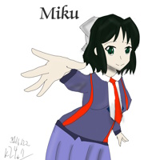
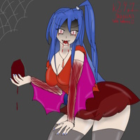
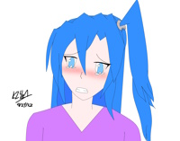

Artsy stuff
Yeah, if you didn't know, I draw. I did it pretty frequently during my last few months of High School (especially after my old bike got stolen back in march) but now I don't really do it often as I have other stuff on my plate these days.
Click on an image to display it in its full resolution. Please do not use my artwork without my permission.
Some computers (moreso much older ones) may not display the full images due to their high resolution. At maximum they are around 4000px.
2D/Hand-Drawn works
Miku! (Symphogear)

I drew this for Miku Kohinata's birthday (which if memory serves me right was November 6th (or 7th?). A bit less effort with this one but oh well... drawing isn't particularly my forte. I just do it because I get bored occasionally.
November 6, 2022
Vampire Tsubasa

I drew this one for halloween. Honestly I could have improved the arm fishnets if I thought of it. And the bag of blood (definitely noble red lol) looks more like a red giant tea bag.
And yes... I made her a tad thicker. :^)
October 31, 2022
help

'Mongus eyes. Enough said.
This was some sort of art trend around the time I made this (September 2022) only because someone noticed a drawing having eyes exceedingly similar to an "among us guy with shoes". Haha, very funny. I was bored and I did this for fun... and now I'm having second thoughts.
September 24, 2022
Aw hell nah, spunch bop cake "redraw"
So I had this image of an AI generated "poorly done spongebob cake" in my downloads folder, and I couldn't help but fucking lose it. THE WAY IT LOOKS IS TOO HILARIOUS FOR ME TO SHUT UP ABOUT.
I just drew this on my computer with a mouse, tracing over the image. Wasn't meant to look good, but neither was that "cake".
August 19, 2022
Sexy MuMu (Sensitive: "Lightly covered")

A friend gave me an idea to draw a "sexy muelsyse". I did it, on paper with pencil. Normally I don't draw sensitive/suggestive content, but I guess sometimes I feel like it. If you didn't know, Silence from Arknights is a good comfort character for me, even if I don't feel like playing AK. I knew a good amount of friends who liked the game, and I kinda just resonated with Silence for some reason.
August 3, 2022
Texas wearing the L4D2 coach outfit
The same friend who suggested me to draw MuMu in a bikini (or whatever), also suggested me to draw this. Texas is from Columbia (AK equivalent of the US if I'm correct) and how the characters she is usually paired with are from Laterano (Exusiai) or Siracusa (Lappland). Seeing as how it was that way, it gave me the idea to draw her in the L4D2 Coach outfit, because she could go for whatever he's having.
August 3, 2022
Happy Birthday, Kanade~!
I drew something for Kanade's birthday on July 28th... just a total teasebox of a rooster princess-carrying her beloved.
I actually made this one with ibisPaintX on an Apple iPad. This was before I really knew pages existed, but I'm not sure how that would go for me either way. I'm quite happy with the result of this one; it looks quite nice compared to previous works. Then of course, I still have room for improvement...
Not sure when I'll get back to doing art since I have classes now, but this was a great piece nonetheless.
July 28, 2022
[Rough sketch, suggestive] KanaMaria
Kanade taking Maria by total surprise. This is a rough sketch I made out of sheer brainrot. Not much to say about this one...
Did this one with the ol' reliable TC4400. Not sure if I'll ever get back to that machine now, but it does the job quite well for a few things. It was only now I realized how much a pain it could be for certain drawings, sooo... might consider picking up a newer iPad.
July 24, 2022
ATi Ruby doodle
As I was talking with some friends on Discord, we brought up ATi Graphics. Eventually, someone brought up Ruby and I hatched the idea to draw her in my total mish-mash of an art style.
One of my traditional/hand-drawn pieces. For some reason it's difficult to do digital, even with the right tools. Well, at least Ruby knows that nVidia "sex fairy" Dawn has no chance against her... not with an "optimistic" 32-bit shader pipeline.
July 1, 2022
Casual Adult Carol (Symphogear GX)
I set up a poll on Twitter a long time ago on what to draw, and Adult Carol won the most votes. I will admit, I didn't think this one through too well. I felt stupid enough to give her "PS1 boobs" without even realizing it. However, the person who told me that has more grotesque takes, so whatever.
This was done on my ThinkPad X201t before I abandoned it due to a motherboard fault. I guess Lenovo should have thought twice before cramming the i5-560M into a compact tablet PC.
June 5, 2022
I'll probably add more stuff if I feel like it.


{kind=link}
{kind=link}
{kind=link}
{kind=link}
{kind=link}
{kind=link}
{kind=link}
{kind=link}